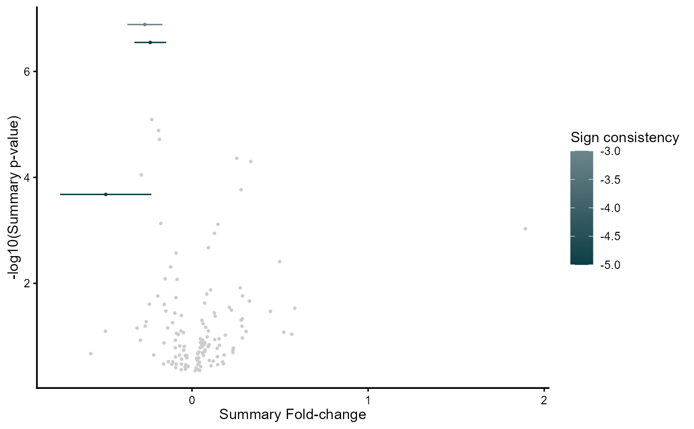

This function plots the REM MetaVolcano using ggplot2
plot_rem(
meta_diffexp,
jobname,
outputfolder,
genecol,
metathr,
colors = c(low = "#083e46", mid = "white", high = "#811820", na = "grey80"),
point_size = 0.6,
label_genes = NULL,
label_top_n = NULL,
label_size = 3,
plot_title = NULL,
show_legend = TRUE
)data.frame/data.table containing the REM results from rem_mv() <data.table/data.frame>
name of the running job <string>
/path where to write the results/ <string>
column name of the variable to label genes in the .html file <string>
top percentage of perturbed genes to be highlighted <double>
named vector of colors for the gradient: c(low, mid, high, na)
size of the points
character vector of specific genes to label
number of top genes (by p-value) to label
size of gene labels
custom plot title (NULL for no title)
whether to show the legend
ggplot2 object
data(diffexplist)
diffexplist <- lapply(diffexplist, function(del) {
dplyr::filter(del, grepl("MP", Symbol))
})
mv <- rem_mv(diffexplist, metathr = 0.1)
#> index Symbol Log2FC_1 CI.L_1 CI.R_1 vi_1 Log2FC_2
#> 1 222 WHAMMP3 NA NA NA NA NA
#> 2 160 PRIMPOL -0.3378182 -0.54408906 -0.1315473 0.01107551 -0.2480139
#> 3 118 MPDZ -0.9249348 -1.32891570 -0.5209538 0.04248245 -0.6006522
#> 4 113 MMP9 1.9734811 1.10629763 2.8406646 0.19575364 4.3029552
#> 5 7 AMPD3 0.3697135 -0.04744253 0.7868695 0.04529861 0.6110937
#> 6 123 MPHOSPH8 -0.2116034 -0.69279528 0.2695885 0.06027323 -0.3439310
#> CI.L_2 CI.R_2 vi_2 Log2FC_3 CI.L_3 CI.R_3
#> 1 NA NA NA -0.2662587 -0.3756295 -0.1568878
#> 2 -0.5164661 0.02043827 0.01875952 -0.2291284 -0.3542972 -0.1039597
#> 3 -1.0368339 -0.16447051 0.04952480 -0.2656371 -0.3954003 -0.1358739
#> 4 2.9598690 5.64604138 0.46956488 1.1760710 0.7709121 1.5812299
#> 5 -0.1360695 1.35825696 0.14531781 0.3667739 0.2264579 0.5070899
#> 6 -1.0921449 0.40428288 0.14572679 -0.2283827 -0.3450875 -0.1116780
#> vi_3 Log2FC_4 CI.L_4 CI.R_4 vi_4 Log2FC_5
#> 1 0.003113802 -0.7385719 -1.30691156 -0.17023224 0.08408214 -0.17550424
#> 2 0.004078305 -0.1327384 -0.94702910 0.68155240 0.17260241 -0.14117164
#> 3 0.004383199 -0.6311629 -1.25072021 -0.01160553 0.09991964 -0.29038789
#> 4 0.042730559 1.5033808 0.04244132 2.96432037 0.55558733 0.89087042
#> 5 0.005125100 0.6016498 0.09670185 1.10659777 0.06637142 0.06306675
#> 6 0.003545399 -0.2829139 -0.65710336 0.09127559 0.03644777 -0.18637598
#> CI.L_5 CI.R_5 vi_5 signcon ntimes randomSummary randomCi.lb
#> 1 -0.43754481 0.086536319 0.01787413 -3 3 -0.2676471 -0.3670301
#> 2 -0.36818515 0.085841876 0.01341502 -5 5 -0.2370264 -0.3275163
#> 3 -0.57577956 -0.004996212 0.02120169 -5 5 -0.4895761 -0.7484198
#> 4 0.09550763 1.686233209 0.16467148 5 5 1.8926666 0.7716524
#> 5 -0.23887025 0.365003741 0.02373124 5 5 0.3342331 0.1726908
#> 6 -0.46537657 0.092624617 0.02026274 -5 5 -0.2282194 -0.3284609
#> randomCi.ub randomP het_QE het_QEp het_QM het_QMp error
#> 1 -0.1682641 1.303486e-07 3.1131661 0.2108553240 27.86103 1.303486e-07 FALSE
#> 2 -0.1465364 2.838513e-07 1.6869040 0.7930951263 26.35657 2.838513e-07 FALSE
#> 3 -0.2307325 2.096707e-04 11.6306553 0.0203199220 13.74237 2.096707e-04 FALSE
#> 4 3.0136809 9.359335e-04 22.3694375 0.0001691819 10.95020 9.359335e-04 FALSE
#> 5 0.4957755 5.009352e-05 4.9282575 0.2947382538 16.44457 5.009352e-05 FALSE
#> 6 -0.1279779 8.110647e-06 0.2649513 0.9919628997 19.91161 8.110647e-06 FALSE
#> se rank
#> 1 0.05070560 1
#> 2 0.04616834 2
#> 3 0.13206308 3
#> 4 0.57194604 4
#> 5 0.08241956 5
#> 6 0.05114362 6
gg <- plot_rem(mv@metaresult, "MV", tempdir(), "Symbol", 0.01)
plot(gg)
